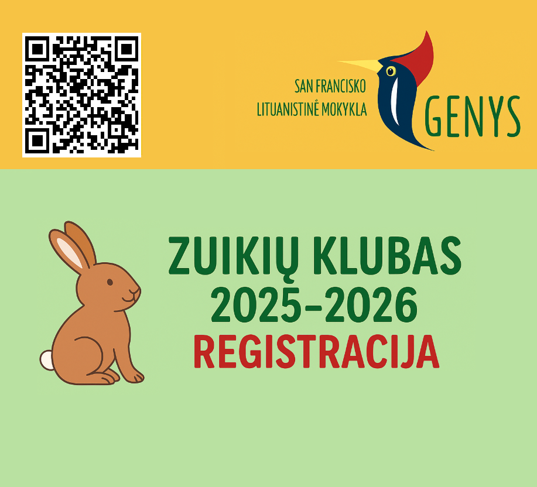
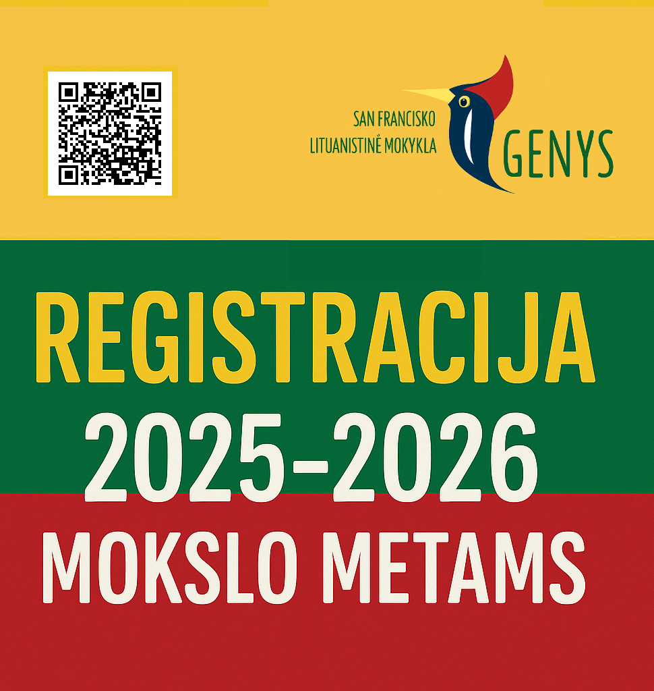
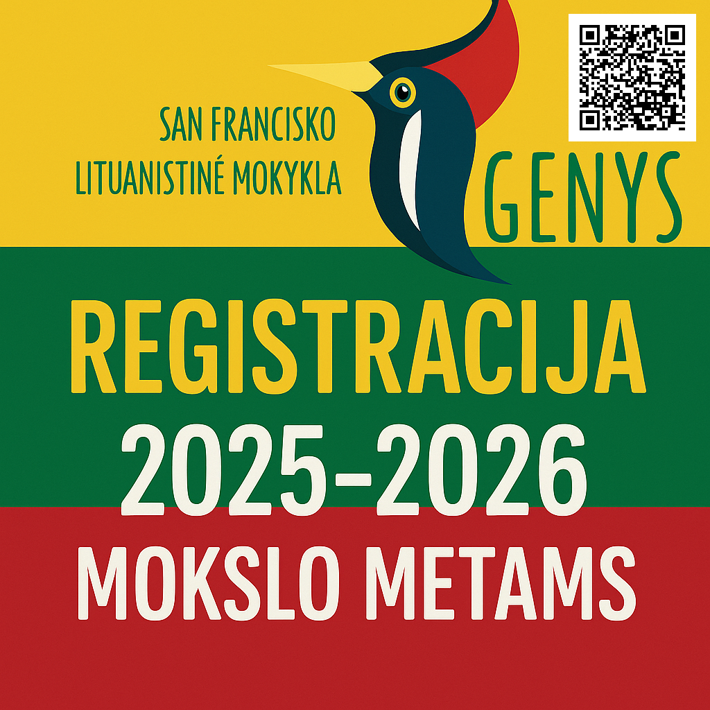
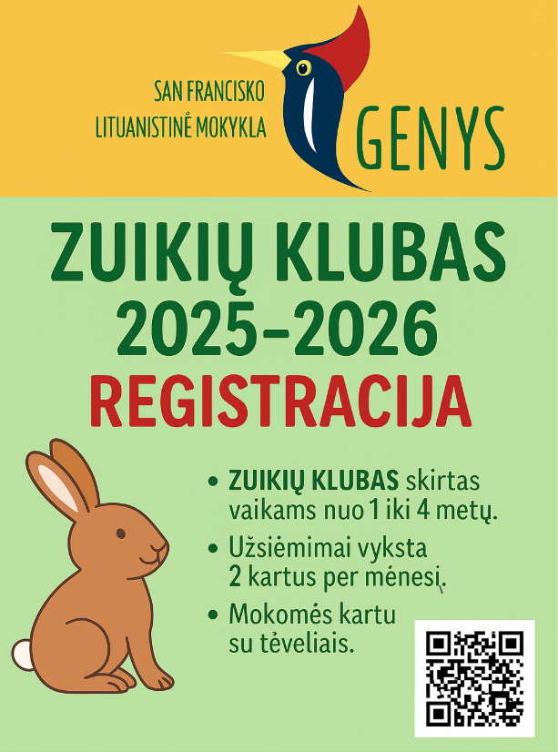
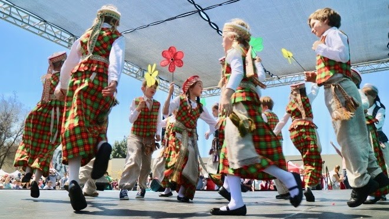

REGISTRACIJA · 2026–2027
Prisijunkite prie „Genio“
Kviečiame vaikus ir šeimas pradėti ar tęsti lietuvišką mokymosi kelionę.
ZUIKUČIŲ KLUBAS · 2026–2027
Registracija jau
prasideda!
Kviečiame mažiausius mūsų bendruomenės narius prisijungti prie „Zuikučių klubo“ – ikimokyklinio amžiaus ugdymo grupės.
- AMŽIUS
- 1–3 m. 11 mėn.
- KADA
- Kas antrą šeštadienį
- LAIKAS
- 9:30–12:00 val.
Tai smagi, žaisminga ir šilta lietuviška aplinka, kurioje mažieji kartu su šeimomis mokosi kalbos, pažįsta tradicijas, dainuoja, žaidžia, kuria ir draugauja.
Pildyti registracijos anketą ↗
GENYS · 2026–2027 MOKSLO METAI
Lietuviška kelionė
prasideda čia.
San Francisko lituanistinė mokykla „Genys“ kviečia 4–14 metų lietuvių kilmės vaikus mokytis lietuvių kalbos, pažinti Lietuvos kultūrą bei tęsti ar pradėti savo mokymosi kelionę.
REGISTRACIJOS TERMINASIki liepos 1 d.Po 2026 m. liepos 1 d. registracijos mokestis nebus grąžinamas.
Pildyti mokyklos anketą ↗Registracijos mokestis mokamas per „Zeffy“.

2026–2027 mokslo metų pradžios informacija →
2025–2026 mokslo metų registracijos archyvas
Šie pranešimai ir registracijos nuorodos skirti ankstesniems 2025–2026 mokslo metams.
REGISTRACIJA 2025-2026 MOKSLO METAMS JAU PRASIDĖJO!

REGISTRACIJA 4+ iki 14 metų vaikams
REGISTRACIJA 2025–2026 mokslo metams prasidėjo!
San Fransisko lituanistinė mokykla GENYS kviečia registruotis į 2025–2026 mokslo metus!
Mokslo metai: 2025 m. rugsėjo 6 d. – 2026 m. gegužės 16 d.
Mokyklos adresas: 19806 Wisteria St., Castro Valley, CA 94546
Amžius: 4–14 metų
Prisijunkite prie lietuviškai kalbančios bendruomenės, kur vaikai mokosi kalbos, gilinasi į tradicijas, dainuoja, šoka ir kuria draugystes visam gyvenimui!
Daugiau informacijos ir registracija: www.sfgenys.org
Klausimai? Rašykite el. paštu: info@sfgenys.org
Nepamirškite nuskenuoti QR kodo plakate arba šioje nuorodoje: https://forms.gle/hwy1YTBxNkBacJdZ6

ZUIKUČIŲ KLUBAS
ZUIKUČIŲ KLUBAS
San Francisko lituanistinėje mokykloje GENYS vėl startuoja Zuikučių klubas – ankstyvojo ugdymo grupė vaikams nuo 1 iki 4 metų.
- Pamokos vyksta kas antrą šeštadienį, nuo 9:30 iki 12 val., kartu su tėveliais.
- Žaidimai, dainelės, lietuviški žodžiai ir pirmieji draugai – visa tai saugioje ir žaismingoje aplinkoje.
Adresas: 19806 Wisteria St., Castro Valley, CA 94546
Daugiau apie mus: www.sfgenys.org
Registracija: https://forms.gle/sg35w4zYrJSeRTHq5
Laukiame jūsų mažųjų zuikučių!
